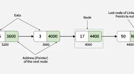

The linked list class of the java collections framework provides the functionality of the linked list data structure (doubly Linkedlist)

LinkedList
LinkedList
Since the linkedList class also implements the queue and the deque interface, it can implement methods of these interfaces as will.
AddFirst(); adds the specifies element at the begining of the linked listAddLast();adds the specified element at the endgetFirst();removeFirst();removeLast();peek();Returns the first element (head) of the linked listpoll(); returns and removes the first element from the linked list.offer();
adds the specified element at the end of the linkedList.